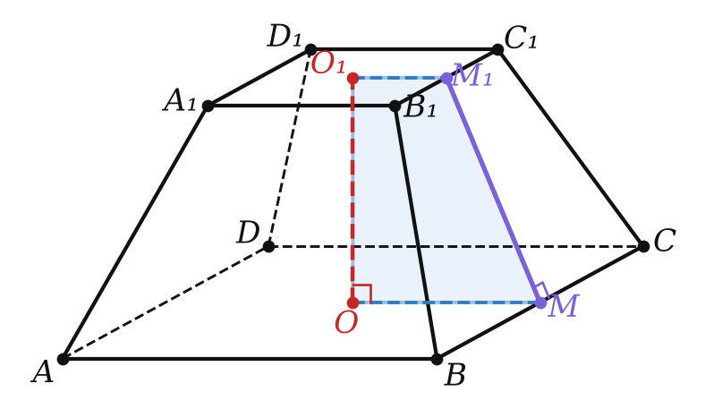
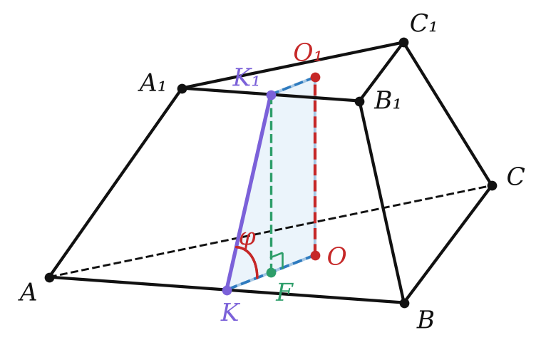

Геометрия · 10 класс
22
Глава 4 · § 22
Усечённая пирамида
элементы, апофема, теорема 22.1
Определение
Откуда берётся усечённая пирамида
- плоскость ∥ основанию
- сверху — пирамида, снизу — усечённая пирамида
- боковые грани — трапеции: A₁B₁ ∥ AB, A₁B₁ < AB

Геометрия · 10 класс · углублённый§ 22 · Усечённая пирамида
Правильная усечённая пирамида
Апофема и высота
ОпределениеОснования — правильные n-угольники, боковые грани — равные равнобокие трапеции. MM₁ — апофема, OO₁ — высота, OO₁M₁M — прямоугольная трапеция.

Геометрия · 10 класс · углублённый§ 22 · Усечённая пирамида
Инструмент
Прямоугольные трапеции
| через | формула |
|---|---|
| апофему | d² = h² + (r₂ − r₁)² |
| боковое ребро | l² = h² + (R₂ − R₁)² |
| двугранный угол φ | tg φ = h / (r₂ − r₁) |
Геометрия · 10 класс · углублённый§ 22 · Усечённая пирамида
Теорема 22.1
Площадь боковой поверхности
ФормулаS_бок = ½ (P₁ + P₂) · d.
Через проекцию: S_бок = (S₂ − S₁) / cos φ.
Через проекцию: S_бок = (S₂ − S₁) / cos φ.
Геометрия · 10 класс · углублённый§ 22 · Усечённая пирамида
Пример
a = 6, b = 12, φ = 60°
- r₂ − r₁ = √3
- h = 3, d = 2√3
- S_бок = ½ · 54 · 2√3 = 54√3
- проверка: 27√3 / cos 60°

Геометрия · 10 класс · углублённый§ 22 · Усечённая пирамида
Практика
Задачи урока
№ 1
Стороны оснований правильной четырёхугольной усечённой пирамиды 2 и 8, апофема 5. Найди площадь боковой поверхности.
№ 2
Стороны оснований правильной четырёхугольной усечённой пирамиды 2 и 12, высота 12. Найди апофему и площадь боковой поверхности.
№ 3
Стороны оснований правильной шестиугольной усечённой пирамиды 2 и 5, высота 4. Найди боковое ребро.
№ 4
Стороны оснований правильной четырёхугольной усечённой пирамиды 2 и 8, боковое ребро 5. Найди высоту.
Геометрия · 10 класс · углублённый§ 22 · Усечённая пирамида
Практика
Задачи урока
№ 5
Соответственные стороны оснований усечённой пирамиды 4 и 6, её высота 3. Найди высоту полной пирамиды.
№ 6
Стороны оснований правильной четырёхугольной усечённой пирамиды 4 и 8, двугранный угол при ребре большего основания 45°. Найди площадь боковой поверхности.
№ 7
Стороны оснований правильной четырёхугольной усечённой пирамиды 1 и 7, высота 7. Найди диагональ пирамиды и площадь диагонального сечения.
№ 8
Стороны оснований правильной шестиугольной усечённой пирамиды 2 и 4, площадь боковой поверхности 36. Найди высоту.
Геометрия · 10 класс · углублённый§ 22 · Усечённая пирамида
Дома
6 задач Д1–Д6
К каждой задаче — «плоская» трапеция отдельно